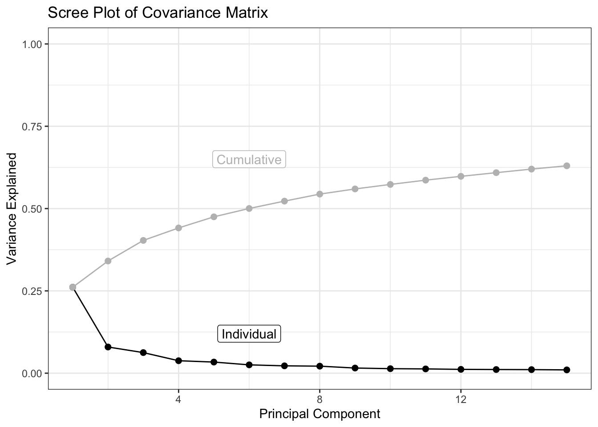
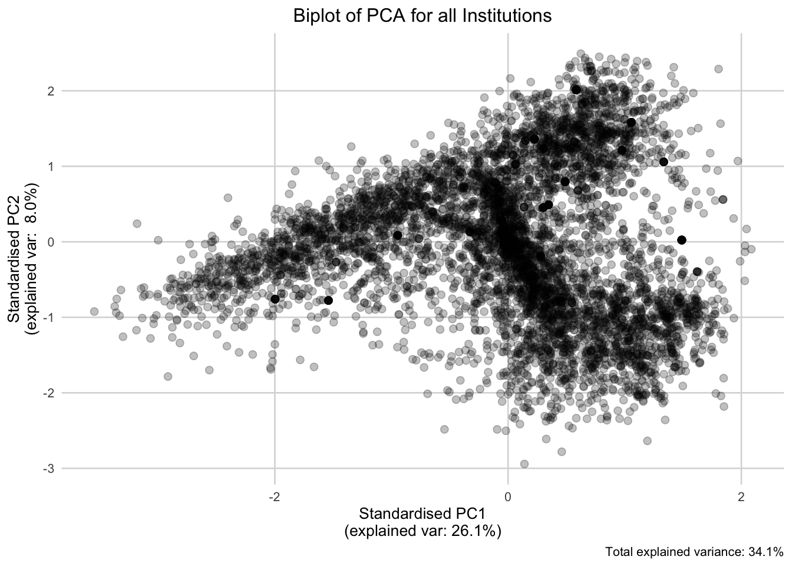
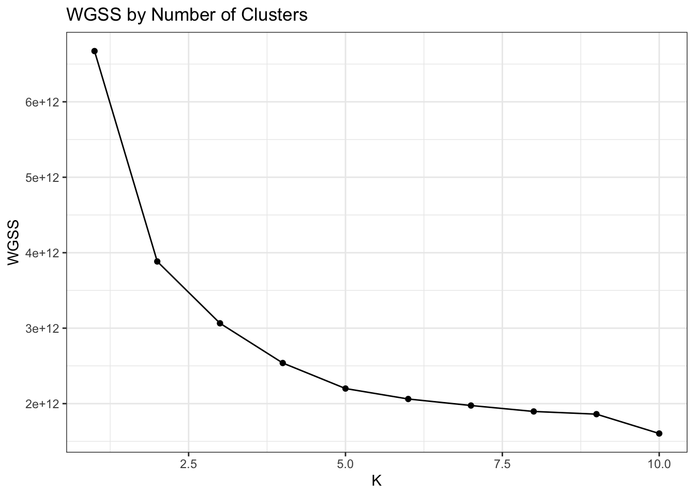
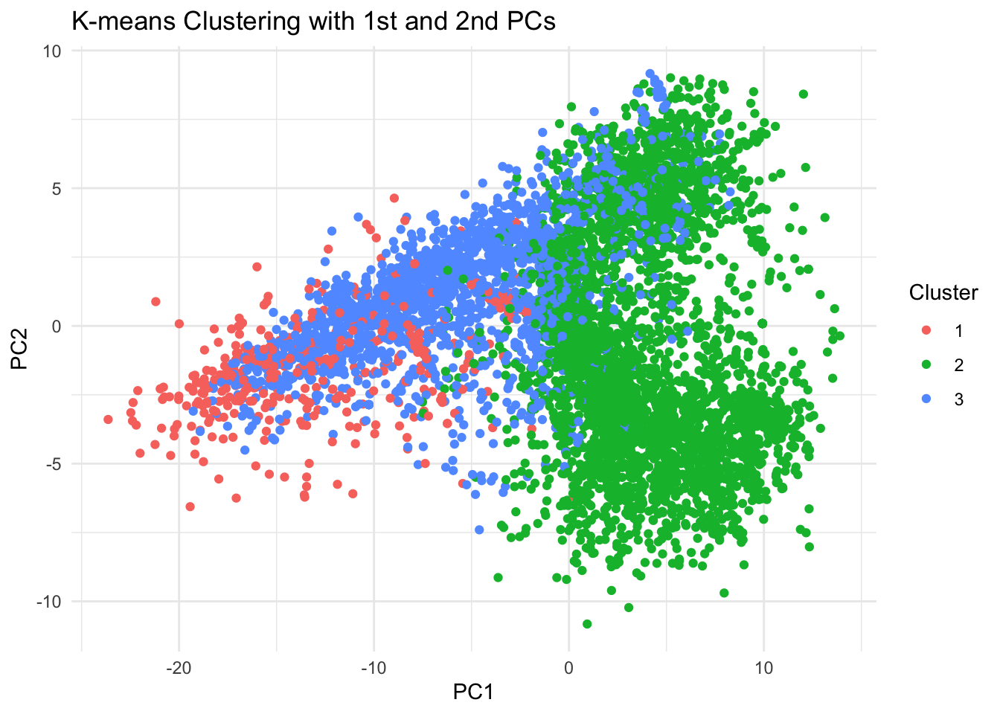
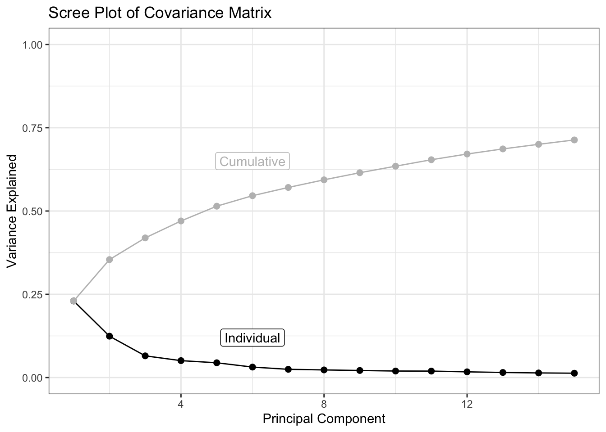
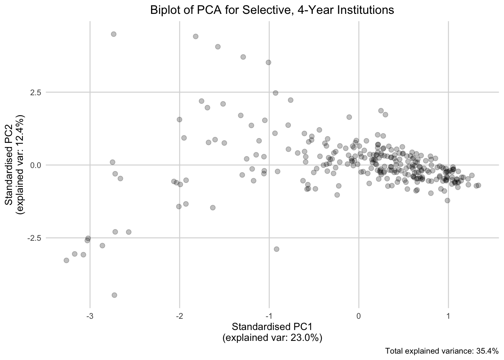
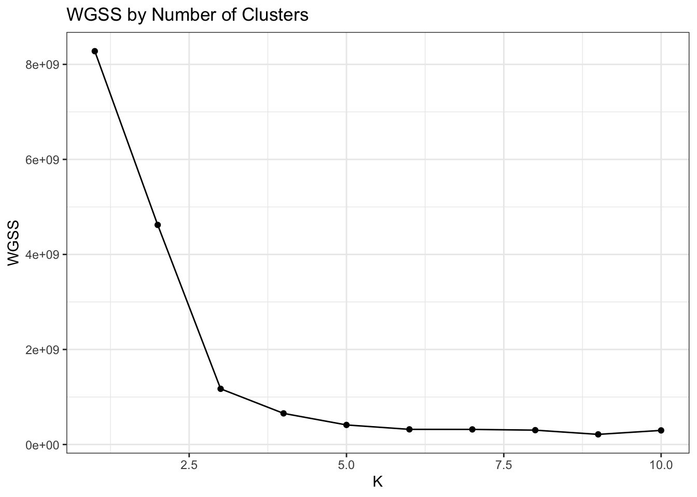
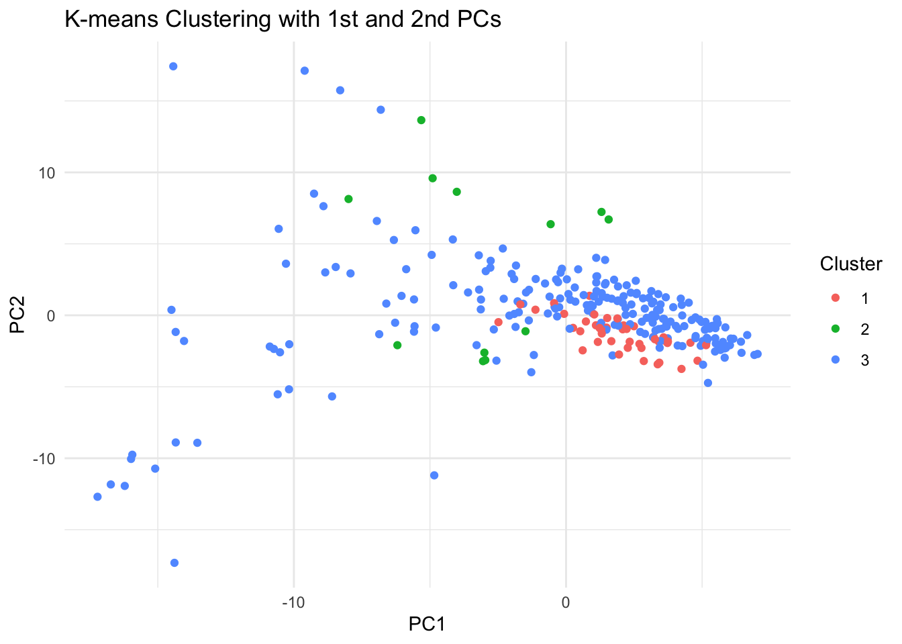

library(tidyverse)
library(naniar)
library(readxl)
library(ggforce)
library(msos)
library(gridExtra)
library(AMR)
library(writexl)
library(ggfortify)
library(MASS)
library(cluster)
library(ggrepel)
library(ggdendro)PCA & K-Means Clustering of College Scorecard Data
Setup
Data Loading
institution <- read.csv("../data/Most-Recent-Cohorts-Institution.csv") %>%
mutate(across(where(is.character), ~na_if(., "PS"))) %>%
type.convert(as.is = TRUE)
data_dic <- read_xlsx("../data/CollegeScorecardDataDictionary.xlsx", sheet = 4) %>%
dplyr::select("VARIABLE NAME", "API data type") %>%
na.omit()Warning: Expecting numeric in G2152 / R2152C7: got 'NA'Warning: Coercing text to numeric in G2654 / R2654C7: '1'Warning: Coercing text to numeric in G2655 / R2655C7: '2'Warning: Coercing text to numeric in G2656 / R2656C7: '3'Warning: Coercing text to numeric in G2657 / R2657C7: '4'Warning: Coercing text to numeric in G2658 / R2658C7: '5'All Institutions
Variable Selection & Imputation
miss_var <- miss_var_summary(institution)
vars_keep <- inner_join(miss_var, data_dic, by = c("variable" = "VARIABLE NAME")) %>%
filter(pct_miss < 30, `API data type` == "float") %>%
pull(variable)
vars_keep <- c("INSTNM", vars_keep)
institution_clean <- institution %>%
dplyr::select(all_of(vars_keep)) %>%
dplyr::select(INSTNM, where(is.numeric)) %>%
mutate(across(where(is.numeric), impute_mean)) %>%
type.convert(as.is = TRUE)
numeric_cols <- institution_clean %>%
dplyr::select(where(is.numeric)) %>%
dplyr::select(where(~ length(unique(.)) > 1))PCA
pca <- prcomp(numeric_cols, center = TRUE, scale = TRUE)index <- 1:15
var_fractions <- pca$sdev^2 / sum(pca$sdev^2)
cum_fractions <- cumsum(var_fractions)
ggplot() +
geom_line(aes(x = index, y = var_fractions[1:15])) +
geom_point(aes(x = index, y = var_fractions[1:15]), size = 2) +
geom_line(aes(x = index, y = cum_fractions[1:15]), color = "gray") +
geom_point(aes(x = index, y = cum_fractions[1:15]), color = "gray", size = 2) +
annotate("label", x = 6, y = 0.65, label = "Cumulative", color = "gray") +
annotate("label", x = 6, y = 0.12, label = "Individual", color = "black") +
coord_cartesian(xlim = c(1, 15), ylim = c(0, 1)) +
labs(title = "Scree Plot of Covariance Matrix", x = "Principal Component", y = "Variance Explained") +
theme_bw()
ggplot_pca(pca, choices = c(1, 2), ellipse = TRUE, arrows = FALSE) +
labs(title = "Biplot of PCA for all Institutions")
K-Means Clustering
WGSS <- sapply(1:10, function(k) kmeans(numeric_cols, centers = k)$tot.withinss)
ggplot() +
geom_point(aes(x = 1:10, y = WGSS)) +
geom_line(aes(x = 1:10, y = WGSS)) +
labs(title = "WGSS by Number of Clusters", x = "K", y = "WGSS") +
theme_bw()
km <- kmeans(numeric_cols, centers = 3)
ggplot() +
geom_point(aes(x = pca$x[, 1], y = pca$x[, 2], color = factor(km$cluster))) +
labs(x = "PC1", y = "PC2", title = "K-means Clustering with 1st and 2nd PCs", color = "Cluster") +
theme_minimal()
Most Influential Variables
cat("PC1:", names(which.max(abs(pca$rotation[, "PC1"]))), "\n")PC1: RPY_5YR_RT cat("PC2:", names(which.max(abs(pca$rotation[, "PC2"]))), "\n")PC2: COMP_ORIG_YR3_RT Selective 4-Year Institutions
Variable Selection & Imputation
institution_4yr <- institution %>%
filter(CCUGPROF %in% c(14, 15))
miss_var_4yr <- miss_var_summary(institution_4yr)
vars_keep_4yr <- inner_join(miss_var_4yr, data_dic, by = c("variable" = "VARIABLE NAME")) %>%
filter(pct_miss < 1, `API data type` == "float") %>%
pull(variable)
vars_keep_4yr <- c("INSTNM", vars_keep_4yr)
institution_4yr_clean <- institution_4yr %>%
dplyr::select(all_of(vars_keep_4yr)) %>%
dplyr::select(INSTNM, where(is.numeric)) %>%
mutate(across(where(is.numeric), impute_mean)) %>%
type.convert(as.is = TRUE) %>%
dplyr::select(where(~ length(unique(.)) > 1))
numeric_cols_4yr <- institution_4yr_clean %>% dplyr::select(where(is.numeric))PCA
pca_4yr <- prcomp(numeric_cols_4yr, center = TRUE, scale = TRUE)var_fractions_4yr <- pca_4yr$sdev^2 / sum(pca_4yr$sdev^2)
cum_fractions_4yr <- cumsum(var_fractions_4yr)
ggplot() +
geom_line(aes(x = index, y = var_fractions_4yr[1:15])) +
geom_point(aes(x = index, y = var_fractions_4yr[1:15]), size = 2) +
geom_line(aes(x = index, y = cum_fractions_4yr[1:15]), color = "gray") +
geom_point(aes(x = index, y = cum_fractions_4yr[1:15]), color = "gray", size = 2) +
annotate("label", x = 6, y = 0.65, label = "Cumulative", color = "gray") +
annotate("label", x = 6, y = 0.12, label = "Individual", color = "black") +
coord_cartesian(xlim = c(1, 15), ylim = c(0, 1)) +
labs(title = "Scree Plot of Covariance Matrix", x = "Principal Component", y = "Variance Explained") +
theme_bw()
ggplot_pca(pca_4yr, choices = c(1, 2), ellipse = TRUE, arrows = FALSE) +
labs(title = "Biplot of PCA for Selective, 4-Year Institutions")
K-Means Clustering
WGSS_4yr <- sapply(1:10, function(k) kmeans(numeric_cols_4yr, centers = k)$tot.withinss)
ggplot() +
geom_point(aes(x = 1:10, y = WGSS_4yr)) +
geom_line(aes(x = 1:10, y = WGSS_4yr)) +
labs(title = "WGSS by Number of Clusters", x = "K", y = "WGSS") +
theme_bw()
km_4yr <- kmeans(numeric_cols_4yr, centers = 3, nstart = 25)
ggplot() +
geom_point(aes(x = pca_4yr$x[, 1], y = pca_4yr$x[, 2], color = factor(km_4yr$cluster))) +
labs(x = "PC1", y = "PC2", title = "K-means Clustering with 1st and 2nd PCs", color = "Cluster") +
theme_minimal()
Most Influential Variables
cat("PC1:", names(which.max(abs(pca_4yr$rotation[, "PC1"]))), "\n")PC1: OMAWDP6_FTFT_POOLED cat("PC2:", names(which.max(abs(pca_4yr$rotation[, "PC2"]))), "\n")PC2: OMENRAP_FULLTIME